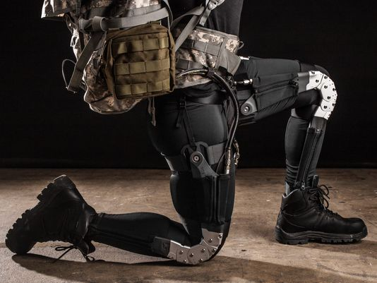
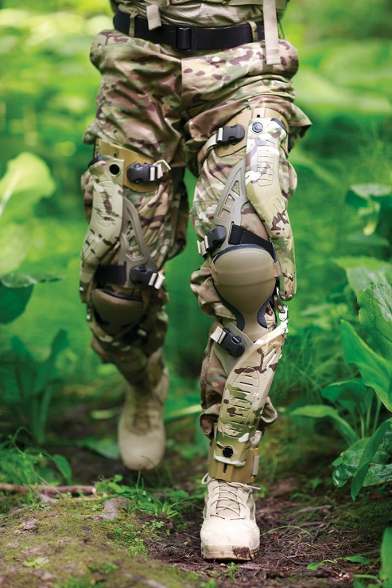
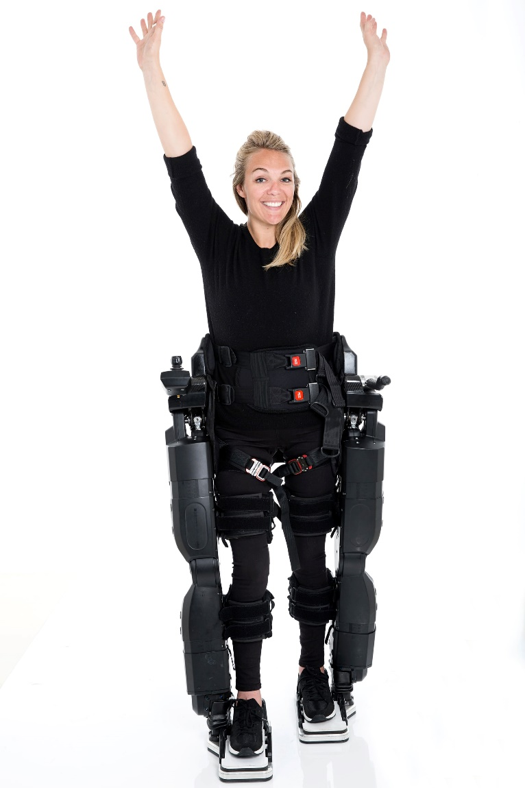

Iron Man and Exoskeletons
by Maxwell Mielke
October 14, 2017
The military has created many phenomenal inventions that have improved the life of both personnel and civilians alike. These inventions encourage freedom, ease burdens, and overall stun the imagination of all that believe these contraptions could be invented. Almost everyone across the world has dreamed of the possibility of a robotic suit since the comic book creation of Iron Man in the early 1960s. This once seemly so far away idea of an Iron Man-like weapon is not so far away.
According to The National Interest, the United States military is developing and testing a next-generation Iron Man-like suit that is designed for protection and improved strength. These suits would help keep valuable US military operators alive when they engage in combat. The project is officially called TALOS, Tactical Light Operator Suit, and is aimed to enhance mobility and protection technologies for special operators, such as Special Forces and Navy SEALS, a Special Operations Command (SOCOM) statement said (Osborn). In Greek mythology Talos was a giant automation made of bronze to protect Crete (Ancient Origins). The TALOS if fully operational would be able to protect more than just the island Crete.

“The ultimate purpose of the TALOS project is to produce a prototype in 2018. That prototype will then be evaluated for operational impact,” a SOCOM spokesman said. (National Interest). The effort to make an Iron Man suit was expanded in 2013 by Administrator William McCraven, former head of SOCOM. TALOS will have a physiological subsystem that lies against the skin that is embedded with sensors to monitor skin temperature, body temperature, and heart rate along with other vital signs (Osborn).
Seeing an iron like body on the battlefield would be intimidating to many enemy combatants. According to Scout as SOCOM statement said, TALOS research and development include advanced armor, command and control computers, power generators, and enhanced mobility exoskeletons”( Scout Warrior). This advanced armor would be able to deflect bullets, protecting the person inside the suit. The command and control computers could keep vital lines of communication open, potentially being utilized in the future with devices such as Google Glass. The enhanced mobility could allow troops to jump higher, run faster, and for longer distances.
One of the main issues preventing outstanding progress to creating a suit, like that of Iron Man, is finding ability to supply power to the suit. The scientist and researchers have struggled with inability to have power for such a power consuming device along with the large size. A project started in 2010 called HULC (Human Universal Load Carrier) by Ekso Bionics and Lockheed Martin, had a small gas powered engine, but was not valued by the US Military due to the loud noise of an engine revealing the position of troops. The HULC eventually was able to operate under its own power for several hours and displayed reduced metabolic cost for the soldiers wearing it, but then the US Military increased the number of hours the device should be able to operate without recharging (Marinov).
Military exoskeletons can be categorized as lower body powered, full body, passive, and energy scavenging, and stationary military exoskeletons. The full body projects like Iron Man all share a common weakness. They are too large, and have too many actuators and are difficult to power and control. Thus, many full body projects have been split in to upper body and modular lower body wearables.
Lower Body Power Military Exoskeletons provide assistance to the legs and transfer loads. Being able to transfer loads can become extremely useful as military soldiers may be carrying loads of upward to 100 pounds. The materials for these exoskeletons may be of soft material or of a hard metal frame. The primary purpose of these exoskeletons is to decrease the metabolic cost of movement. (Marinov).
Examples of Lower Body Power exoskeletons are the following with links: “Compliant Universal Knee Exosuit (unknown official designation) – Ekso Bionics & Defense Advanced Research Projects Agency’s Warrior Web, ExoAtlet by ExoAtlet, Hercule by RB3D, Kinetic Operations Suit by B-Temia with Revision Military, various prototypes by Arizona State University, various prototypes by SpringActive, Wyss Exosuit by Wyss Institute and Defense Advanced Research Projects Agency’s Warrior Web, SuperFlex by SRI Robotics / SuperFlex and Defense Advanced Research Projects Agency’s Warrior Web, unknown prototype by the Chinese PLA, Hip Actuating Exoskeleton for Running Assistance by West Point, Power Armor– Ekso Bionics & SRI Robotics” (Marinov).
Passive military exoskeletons do not contain electronics, batteries, or actuators. These exoskeletons may be used to absorb shock or vibrations for military. They can also transfer a percentage of weight of a soldier’s backpack directly into the ground. The Marine Mojo and Terra Mojo by 20KTS+ and Operations Exoskeleton by DSTO are examples (Marinov).
Energy scavenging exoskeletons primary purpose is to produce energy. These can purposefully hinder solider to collect energy to be turn into electricity to recharge a battery or directly power a device. Some of these devices can be switched from collective to assistive (Marinov). Soldiers may carry more than 17 pounds of batteries on their back for an average 72- hour missions. Currently the Joint Infantry Company Prototype, energy system is a knee brace structure. This system also includes a vest power manager that has a central battery, a photovoltaic solar panel and a backpack that collects energy as it moves up and down on a back (Hoffman).
The military is also looking into stationary exoskeletons. These may increase the ability to hit targets through a stabilization system. The MAXFAS: A Mobile Arm Exoskeleton for Firearm Aim Stabilization. This exoskeleton is based on tremor suppression and may have a future if natural hand movements and other variations can be further suppressed with this technology. The exoskeleton has been able to improve of test subjects after training (Marinov).
The development of exoskeletons by the military and other organizations has caused further development that has changed the lives of many civilians. Amazingly enough, exoskeletons have made it possible for those that are paralyzed to walk once again. These devices have been able to allow the injured and elderly people to accomplish tasks that would normally be impossible. Sophie Morgan was unable to stand for 10 years until an exoskeleton by Rex Bionics made it possible. A joystick at her hand allows her to walk, with two metal plates below her feet. Technology is also enabling wheelchair users to walk through an exoskeleton controlled by a system linked to the brain that can be paired with virtual reality and tactile feedback (Davis). This technology, once further developed, can impact the lives of the 18.2 million adults in the United States that are unable or find it very difficult to walk a quarter mile (Centers for Disease Control and Prevention). The amount of people in the world that can be transformed by this technology is outstanding.
The exoskeleton boots that Hugh Herr and his team at MIT are developing have the ability to make simple walking less tiring. The device consists of simple fiberglass struts attached to boots with small motors alternating tension and then release in time with your walking pace. These boots have made it possible that subjects only bore 30% of a load. This causes a fifty pounds to feel like 35 pounds while wearing the boots.
With technology advancements and innovation, the mere thought of an Iron Man suit may soon be a tangible reality. The inventions that are in progress will impact many groups in a variety of ways. The increase in funding for exoskeletons has changed the lives of many forever. When looking at exoskeletons, the future is bright. The final result may not be as flashy or stylish as Tony Stark’s Iron Man, but may have an even greater impact than the fictional character.
- Ancient Origins. “Talos Crete.” Ancient Origins Reconstructing the Story of Humanity's Past, 16 Feb. 2013, www.ancient-origins.net/myths-legends/talos-crete-00157.
- Centers for Disease Control and Prevention. “National Center for Health Statistics.” Centers for Disease Control and Prevention, Centers for Disease Control and Prevention, 3 May 2017, www.cdc.gov/nchs/fastats/disability.htm.
- Davis, Nicola. “Bionic legs and smart slacks: exoskeletons that could enhance us all.” The Guardian, Guardian News and Media, 25 Dec. 2016, www.theguardian.com/world/2016/dec/25/bionic-legs-and-smart-slacks-exoskeletons-that-could-enhance-us-all.
- Hoffman, Michael. “How Army and Marine Leaders Could Replace Batteries.” TandemNSI, 30 June 2016, www.tandemnsi.com/2016/06/how-army-and-marine-leaders-could-replace-batteries/?mc_cid=d83ca179f5&mc_eid=0c3e21b983.
- Love, Dylan. “These Boots Make Walking Easy Even When Carrying Heavy Loads.” Business Insider, 8 May 2014, www.businessinsider.com/hugh-herr-robotic-exoskeleton-boots-2014-5.
- Marinov, Bobby. “19 Military Exoskeletons into 5 Categories.” Exoskeleton Report, 5 July 2016, http://exoskeletonreport.com/2016/07/military-exoskeletons/.
- Osborn, Kris. “2018: The Year the U.S. Military Goes "Iron Man"?” The National Interest, The Center for the National Interest, http://nationalinterest.org/blog/the-buzz/2018-the-year-the-us-military-goes-iron-man-20832.
- Scout Warrior. “Special Ops Advances Iron Man Suit-2018.” U.S. Special Operations Command is Engineering a Next-Generation Exoskeleton to Keep Operators Alive, Scout, 24 May 2017, https://scout.com/military/warrior/Article/US-Special-Operations-Command-is-Engineering-a-Next-Generation-E-101455258.
- Image 1: Marinov (XOS 2, Sarcos)
- Image 2: Marinov (DARPA Warrior Web Exosuit, Ekso Bionics, Source: Defense Department via Army Times)
- Image 3: Marinov (Marine Mojo, 20KTS+)
- Image 4: Davis (photo taken by Teri Pengilley for the Guardian)